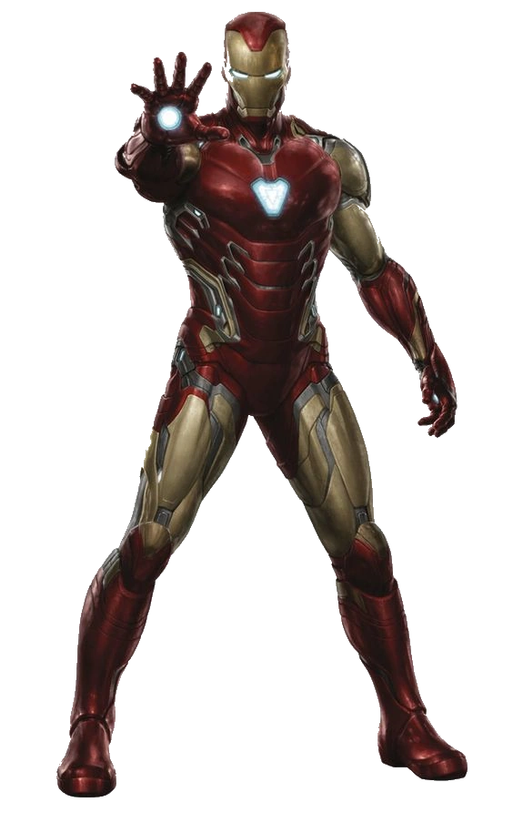
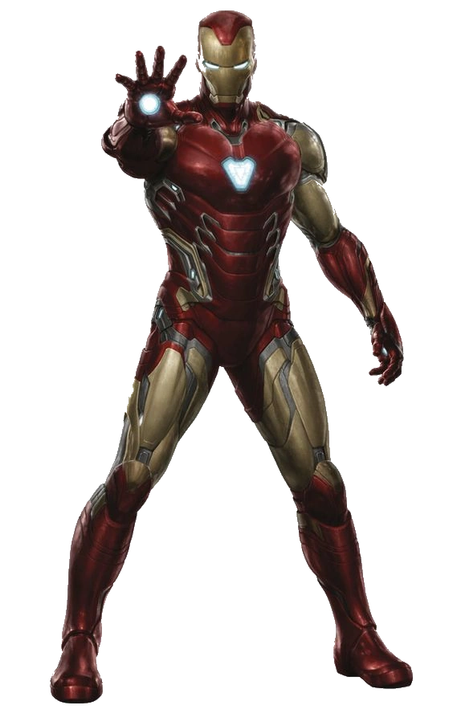

Iron man
Es un multimillonario, genio inventor y empresario que, después de un secuestro y una grave herida en el corazón, construye una armadura tecnológicamente avanzada para escapar y proteger al mundo
Es un multimillonario, genio inventor y empresario que, después de un secuestro y una grave herida en el corazón, construye una armadura tecnológicamente avanzada para escapar y proteger al mundo
Thor, en la mitología nórdica, es el dios del trueno, la fuerza, la protección y la fertilidad
Bruce Banner es un científico que, tras una exposición a radiación gamma, se transforma en Hulk, una criatura de fuerza descomunal cuando se enfada.
La Avispa es una superheroína que puede cambiar de tamaño, volar y controlar insectos, además de ser una experta en artes marciales.
Es un superhéroe de Marvel Comics conocido por su capacidad de reducir su tamaño a nivel subatómico y comunicarse con las hormigas